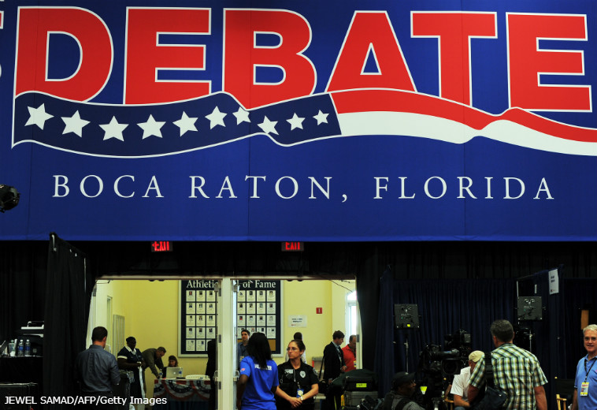

تقریبا همه رهبران حزب جمهوریخواه قبول دارند ۲۰ مناظرهای که در جریان مراحل مقدماتی انتخابات ریاست جمهوری قبل برگزار شد، به وجهه میت رامنی لطمه زد. مطرح شدن اصطلاح «self-deportation» را به یاد دارید؟ در جریان این مناظرهها چهرههایی نظیر هرمن کین و نیوت گینگریچ در مقاطعی پیشتاز شدند، اما نهایتا شمع محبوبیتشان رو به خاموشی رفت.
رهبران حزب مصمم هستند که اجازه ندهند دیگر چنین اتفاقی بیفتد. آنها پنجشنبه گذشته دست بکار شدند، و در جلسه کمیته ملی حزب جمهوریخواه تصمیم گرفتند، تعداد مناظرهها را در مرحله مقدماتی به حدود نصف کاهش دهند. گروهی متشکل از ۱۳ عضو کنگره ملی حزب که اساسا تحت رهبری رینس پریبوس، رهبر حزب، عمل میکنند، در مورد زمان، مکان و انتخاب رسانههای پوشش دهنده مناظرههای مقدماتی حزب جمهوریخواه در سالهای ۲۰۱۵ و۲۰۱۶ تصمیم گیری خواهند کرد. آنها مصر هستند شماری از چهرههای جمهوریخواه در کار اداره جلسات به مجریان کمک کنند.

برای عملی کردن این طرح جدید، نامزدهایی که در مناظرههایی غیر از مناظرههای مورد تأیید حزب شرکت میکنند، از حضور در مناظرههای حزب محروم میشوند. در این بین، بزرگترین شگفتی میزان اندک مقاومتی است که این طرح با آن روبرو شده است.
دو گروه از اجرایی شدن قاعده جدید سود میبرند: نامزدهای مشهورتر که به پوشش رسانهای رایگان نیاز ندارند، همچنین شبکههایی که هزینه زیادی برای تهیه و پخش مناظرهها صرف میکنند و دوست ندارند بیش از چند مناظره برگزار کنند. بازندگان روش جدید هم نامزدهای کمنام و نشانتر و شبکههای کابلی هستند که در شبهای برگزاری مناظرهها بیش از حد معمول مخاطب دارند. به این ترتیب فرصت کمتری برای اسپانسرهای غیرتلویزیونی فراهم میشود. در یک کلام، نتیجه تصمیم اخیر حدودا نصف شدن مناظرهها به نسبت سال ۲۰۱۲ و احتمالا طرح سوالاتی دوستانهتر خواهد بود.
آقای پریبوس در مصاحبهای گفت: "این روزها هروقت برای مردم عادی سخنرانی میکنید، بیشترین حرفی که با تشویق حاضران روبرو میشود این است که بگویید در شکل برگزاری مناظرهها و مجریان آنها تغییرات داده خواهد شد. این حرف مردم را به شدت سر شوق میآورد. آنها خواهان دیدن مجریانی قوی هستند که دنبال مچگیری نباشند، و وظیفه ما این است که متولی فرآیند تعیین نامزد نهایی باشیم. در یکی دو دوره اخیر، کمیته ملی حزب جمهوریخواه این وظیفه را فراموش کرد."
از دست دادن پوشش رسانهای رایگان میتواند به ضرر نامزدهای کمترشناخته شدهای نظیر ریک سانتوروم، بن کارسون یا پیتر کینگ باشد، اما پریبوس گفت ستادهای تبلیغاتی نامزدهای آینده، معتقد نیستند این تغییرات به سود فرد خاصی، طراحی شده باشند. او گفت: "من به طور خصوصی با چندین نفر از نامزدهای بالقوه صحبت کردهام، و همه آنها از این طرح کاملا حمایت میکنند."
رندی اوانز، عضو کمیته ملی حزب از ایالت جورجیا که از مشاوران ارشد ستاد انتخاباتی نیوت گینگریچ بود، پیروزی گینگریچ در ایالت کارولینای جنوبی و بعد شکست او در فلوریدا را با عملکرد موفق، و سپس ضعیفش در مناظرهها مرتبط دانست. اما او از این اقدام بهعنوان راه حلی بینابینی حمایت کرد. او گفت که ممنوعیت مشارکت در مناظرههای مورد تأیید آنقدرها که برخی امیدوار بودند سفت و سخت نیست. مثلا در مقطعی آقای پریبوس تصمیم گرفت نمایندگان نامزدهایی که در مناظرههای دیگر شرکت کرده بودند را تعلیق کند. آقای اوانز گفت: "آخر سر این معقولترین حاصل ممکن برای کار بود." با آنکه این طرح از حمایت گسترده اعضای کنگره ملی حزب برخوردار است، برخی هم با آن مخالفت کردهاند.
دایانا اوراک، عضو کمیته ملی از ایالت نوادا، گفت: "من فکر نمیکنم مجازات راه حل مناسبی باشد. من بهعنوان یک رأیدهنده دوست دارم نامزدها را در همه جاهای ممکن ببینم. میخواهم روهای خوب، بد و زشت آنها را ببینم." پریبوس همچنین سعی کرده رسانهها را هم به همکاری تشویق کند. او در ماههای اخیر با مدیران سیاسی و روسای دفترهای شبکههای عمده نظیر ABC، NBC، CBS، CNN و Fox News ملاقات و تبادل نظر کرده، و سعی کرده از دیدگاههای این شبکهها باخبر شود. چاک تاد، مدیر بخش سیاسی NBC و خبرنگار ارشد این شبکه در کاخ سفید، میگوید: "هدف اصلی، پای حرف هم نشستن است. گفتگوها خیلی باز و خوب بود. آنها حرفهای ما را شنیدند و ما هم حرفهای آنها را."
بهخاطر فضای سیرکمانند دوره قبل، و بهدلیل سوء ظنها درباره گرایش رسانهها به لیبرالها، بعضی جمهوریخواهان ترجیح میدهند خبرنگاران رسانههای عمده کلا کنار گذاشته شوند. جان پاجت، رئیس حزب جمهوریخواه در ایالت جورجیا، میگوید: "کسانی که مجری مناظرهها هستند باید جمهوریخواه باشند." نارضایتی از مجریان مناظرههای سال ۲۰۱۲ یکی از دلایل این نگرانی است. در آن سال انتقادات زیادی درباره جورج استفانوپولوس و کندی کراولی مطرح شد. آقای استفانوپولوس از شبکه ABC در ژانویه ۲۰۱۲ با سوالاتش درباره پیشگیری از بارداری نامزدها را به دردسر انداخت. کندی کراولی از شبکه CNN هم در جریان دومین مناظره ریاست جمهوری میان میت رامنی و باراک اوباما صحبت نامزد جمهوریخواه را قطع کرد تا به او بگوید که در حرفهایش درباره حملات به سفارت آمریکا در بنغازی اشتباهاتی وجود داشته است.
مقامات کنگره ملی حزب جمهوریخواه قصد کنار گذاشتن رسانههای عمده را ندارند. تهیه و تولید مناظرهها کاری هزینهبر و مستلزم داشتن تهیهکنندگانی ماهر و تواناست. کنگره ملی حزب همچنین میخواهد دامنه مخاطبان خود را افزایش دهد، و خود را به یک سالن دربسته محدود کنند. یکی از منابع شاغل در این شبکهها گفت: "آنها هم در این زمینه بازیهای سیاسی خود را دارند. رینس و شان اسپایسر مدیر روابط عمومی اسیر این بازی احمقانه نخواهند شد. آنها به سازمانهای خبری حرفهای نیاز دارند." در عوض، کنگره ملی حزب از شبکهها خواهد خواست که چند چهره محافظهکار به پنل مجریانشان اضافه کنند. به این ترتیب شاید خبرنگاران محافظهکاری مثل ریچ لوری یا بیل کریستول در کنار دایان سایرز و جان کینگز قرار بگیرند. بیشتر مدیران سیاسی و روسای دفترهایی که با پولیتیکو صحبت کردند، گفتند که با این طرح مشکلی ندارند؛ البته تا حد مشخصی. یکی از منابع شاغل در یکی از شبکهها گفت: "آیا با اینکه در کنار ویکلی استاندارد یا نشنال ریویو مناظره برگزار کنم راحتم؟ البته. اما آیا میتوانم همین کار را در کنار بریتبارت انجام بدهم؟ به احتمال قوی نه."
کسانی که در این جلسات شرکت میکنند، میگویند که ظاهرا پریبوس نگرانی بزرگتری از مجریان دارد، و آن اینکه مطمئن شود تعداد مناظرهها کمتر خواهد بود. یکی از شرکت کنندگان در جلسات میگوید که طبق برنامه جدید، شمار مناظرهها "بین 6 تا 10" خواهد بود. بنظر میرسد که شبکههای رسانهای از این طرح راضی هستند، چرا که به هریک از شبکهها 1 یا 2 برنامه میرسد. با توجه به شمار مخاطبان در ساعات پربیننده اول شب، بعضی وقتها پخش مناظرهها میتواند باعث کاهش شمار تماشگران شود. سریال "خانواده امروزی" شبکه ABC بطور میانگین 8 میلیون بیننده دارد، اما پربینندهترین مناظره چرخه انتخاباتی سال 2012 این شبکه را 7،63 میلیون نفر تماشا کردند. یک مدیر رسانهای گفت: "شبکهها نمیخواهند 7 یا 8 مناظره پخش کنند. ما برای این تعداد مناظره جا نداریم." شبکههای CNN و Fox News ، که رویهم میزبان 12 مناظره از 20 مناظره دوره قبلی بودند، علاقه کمتری به میزبانی این رویدادها نشان میدهند. مناظرهها در سال 2012 باعث افزایش شمار بینندگان هر دو شبکه شد، و فرصتی برای نشان دادن تواناییهایشان بود. اما شبکههای کابلی بیش از همه به هیجانانگیز شدن مناظرهها کمک کردند.
مقدمههای ویدئویی دقیق و مفصل شبکه CNN مورد انتقاد زیادی قرار گرفتند. شبکه Fox News هم نامزدها را وادار کرد که اگر با افزایش 1 دلاری مالیاتها در ازای کاهش 10 میلیون دلاری هزینههای عمومی موافقند، دستشان را بالا ببرند، که این کار هم بسیاری از افراد دست راستی را ناراحت کرد. رایان کال، رئیس حزب جمهوریخواه در ایالت کلرادو، گفت: "من علاقهای به برآوردن خواستهها و منافع شبکههای تلویزیونی ندارم. من به دنبال یک گفتگوی جدی هستم، نه فرصتی برای کسانی که میخواهند دفعه بعد برای Fox News برنامه اجرا کنند." با پیش رفتن احزاب در پیاده کردن برنامههایشان، احتمال بروز اختلاف بر سر جزئیات بیشتر میشود. "مناظره" تعریف حقوقی مشخصی ندارد؛ مقامات حزب میگویند که تصمیم با کمیته جدید التأسیس مناظرات است. مثلا اگر شماری از نامزدها در یک همایش حاضر شوند، یا یک "مصاحبه مشترک" برگزار کنند، تکلیف چیست؟ نهایتا اگر شبکهها و نامزدهای شناخته شدهتر احساس کنند که برآوردن خواستههای کمیته مناظرات بیش از حد سخت است، در تئوری هر دو میتوانند آنها را دور بزنند.
هانری باربر، یک عضو کمیته از میسیسیپی، میگوید: "ستادهای انتخاباتی همیشه به دنبال منافع خودشان هستند. آنها هستند که ماشین را هدایت میکنند. ما فقط میتوانیم بگوییم که مثلا سرعتتان از 90 کیلومتر در ساعت بیشتر نشود، یا از فلان جاده خارج نشوید، یا نباید در چاله بیفتید، و اگر به این حرفها گوش نکنید، ممکن است یک مأمور پلیس با کلاه کنگره ملی جمهوریخواهان شما را به کناره مسیر هدایت کند. البته میتوانید او را جا بگذارید." مدیران سیاسی رسانهها و روسای دفترها نگران این مسأله هم هستند که بعد از انتخاباتهای مقدماتی، کنگره ملی حزب کنترل چندانی بر فرآیند مناظرات نخواهد داشت. یکی از مدیران سیاسی با ذکر این نکته که اوباما و هیلاری کلینتون در آوریل 2008 در دو مناظره دو نفره شرکت کردند، گفت: "مرحله اول تا روز موسوم به اَبَر سهشنبه ادامه دارد. بعد از آن دیگر وارد وقتهای اضافه میشویم."
او در ادامه گفت: "اساسا آنها تنها تا زمان شروع دور مقدماتی میتوانند مناظرهها را کنترل کنند، اما بعد از آن باید خود را کنار بکشند، چون دیگر از کنترلشان خارج است." آنهایی که در تغییر مقررات اخیر دست داشته اند، پیشبینی میکنند که این تغییرات موثر خواهد افتاد. سالومون یوئه، عضو کمیته از ایالت اورگون، میگوید: "دفعه پیش چوب دست ما نبود، اما این بار این چوب عامل بازدارنده بسیار موثری خواهد بود."
منبع: پولیتیکو